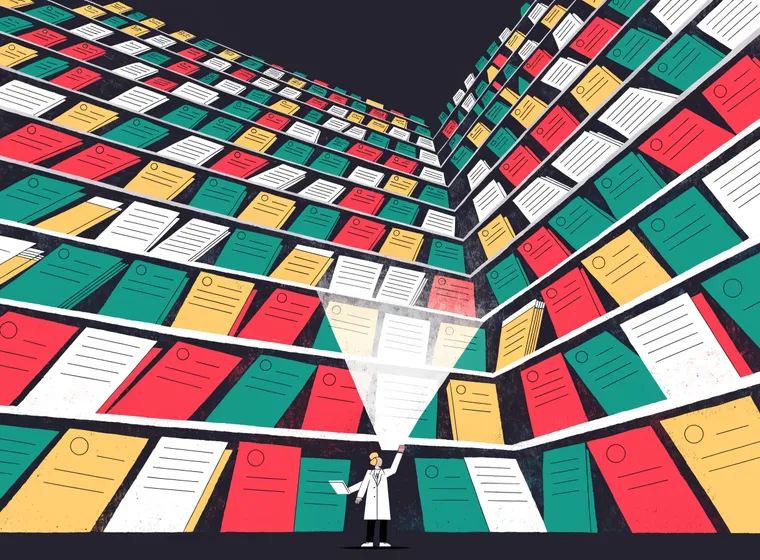
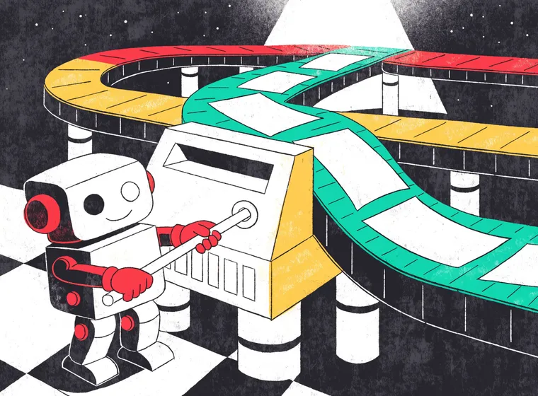
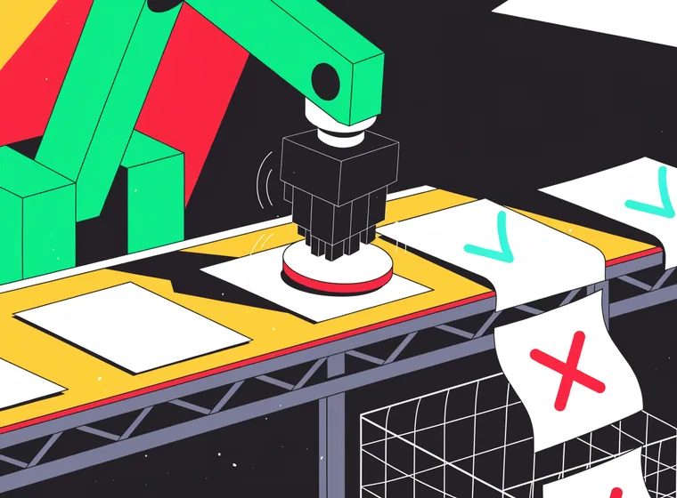

TriAgent · Case replay · Code Blue
One patient. No chart. A replay of how an adaptive multi-agent system decides when almost nothing is known.
Architecture & results: AI 7(6):230, MDPI 2026 · timings compressed, case illustrative
scroll — time moves when you do ▼
00:00 — intake
Four of six fields unknown. In a mass-casualty emergency — or where the health system itself is the casualty, in disaster response and conflict settings like Gaza — this is the normal case, not the edge case.
01:00 — orchestration
Reads the case and decides which specialists to invoke — the route is chosen by model reasoning, not a fixed execution path.
hover or tap any agent on the boardNo fixed pipeline. The Orchestrator invokes only what this case needs — and every route it can draw still ends at the safety gate.
04:00 — retrieval
Any clinician would do exactly this. TriAgent automates it — Retrieval-Augmented Generation (RAG), run as an agent. Same three steps, told twice.



↺ then back to step 1 — three passes, each sharper than the last
07:00 — safety verification
Dynamic routing usually costs you the guarantee that the safety step is on the path. TriAgent embeds verification in every continuation pathway instead — the plan can change; the gate cannot be skipped.
09:00 — critique
A Critique Agent reviews the full reasoning trace before anything is finalized. It can — and here does — send the plan back.
11:00 — verdict
escalate now · audit trail sealed · 11 minutes, chart still blank
Epilogue — what the evaluation showed
The problem. Clinical decision support is usually built for hospitals on a good day: structured records, complete histories, time to look things up. Crises break every one of those assumptions. The patient arrives unconscious, undocumented, and unstable, and the decision cannot wait. Rule-based systems degrade when the structured data they key on is absent; a bare language model will answer anyway, with nothing in the loop that forces a safety check before its advice lands.
The approach. Make missing information a first-class input. An Orchestrator Agent reads the case and decides which specialist modules to invoke — clinical assessment, retrieval, treatment planning, safety verification, system coordination — routing by model reasoning rather than a fixed execution path. A retrieval sub-agent iteratively refines its queries and grades relevance over 49,000 MIMIC-IV discharge notes; medication-conflict screening and allergy-risk assessment run in parallel when the case indicates them; and a Critique Agent reviews the full reasoning trace before any recommendation is finalized.
85.0% critical-case recall where the best matched baseline reached 14.7% — with a safety check on every continuation pathway.
What was hard. Dynamic routing and mandatory safety pull in opposite directions. The moment the execution path is chosen by a model instead of a flowchart, you lose the structural guarantee that the safety step is on it. TriAgent's answer is architectural: safety verification is embedded in every continuation pathway, so however the Orchestrator plans, there is no route to a recommendation that bypasses the check — and the full trace is auditable end to end.
The honest caveat. These are internal system properties, measured retrospectively. Clinical-safety benefit is a different claim, and it remains to be established through prospective, clinician-involved validation. The paper says so plainly, and so does this page.
What this changes. Multi-agent orchestration stops being an engineering flourish and becomes a safety pattern: coordination is what lets a system be adaptive and auditable at once. For the settings this is built for — where the chart may never exist — that combination is the point.
Ibrahim, AlSanousi, Serag. “TriAgent: An Adaptive Multi-Agent Architecture for Crisis Clinical Decision Support Under Incomplete Information.” AI 7(6):230, MDPI, 2026. Open access (CC BY). The case above is illustrative and time-compressed; architecture, corpus, and results are the paper's.
Back to research →